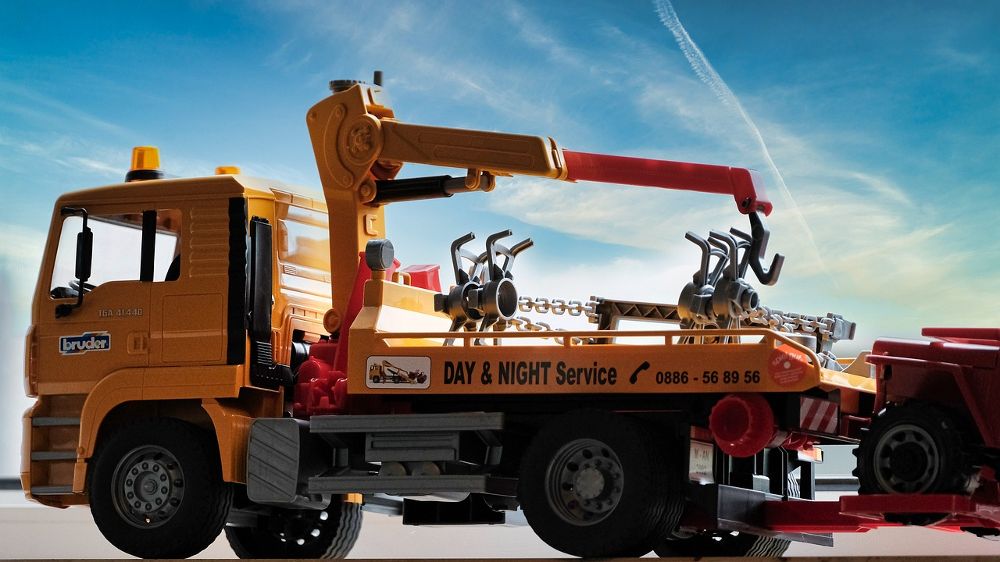

Herzlich willkommen auf der Webseite des kostenlosen Abschleppdienstes Stuttgart. Wir holen Ihr Fahrzeug bei Ihnen ab und entsorgen es absolut kostenlos für Sie.
Öffnungszeiten: Montag bis Freitag 8:00 bis 18:00 Uhr, Samstag 9:00 bis 15:00 Uhr
Gebiet: Stuttgart und Umgebung
Unser Team ist rund um die Uhr für Sie im Einsatz. Mit jahrelanger Erfahrung und moderner Ausrüstung bieten wir Ihnen den besten Service. Unsere Abholung ist für Sie kostenlos, egal ob Sie in Stuttgart oder der Umgebung sind.

Rauheckstr. 19, 74232 Abstatt
Öffnungszeiten: Montag bis Freitag 8:00 bis 18:00 Uhr, Samstag 9:00 bis 15:00 Uhr
Gebiet: Stuttgart und Umgebung